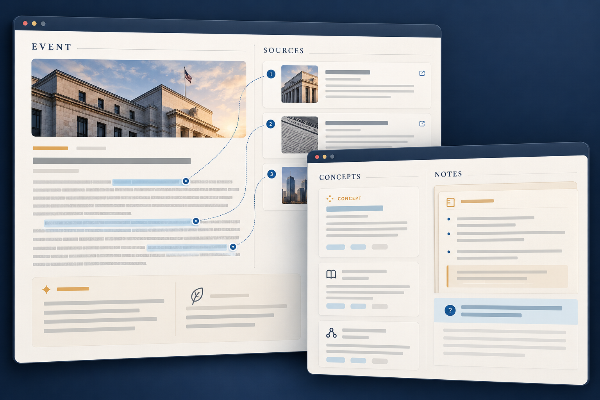

01
金融新闻学习系统
将新闻事件整理为证据、概念、市场影响与学习提示，帮助学习者理解信息之间的联系。

- YEAR /时间
- 2026
- ROLE / 我的职责
- 项目发起、产品需求设计、AI 辅助开发协作、阶段验收与迭代推进。
- TOOLS / 工具与技术
- Python · DeepSeek API · OpenAI-compatible API · Docker · Codex · PowerShell
- CONTEXT / 项目类型
- 个人项目 / AI 学习产品 / 持续开发中
The brief.
背景与目标
金融新闻更新频繁，信息分散，初学者往往能读懂单条消息，却难以连接事件背景、经济概念与潜在影响。我希望建立一个以新闻为入口的学习平台，把来源证据、概念解释与学习提示组织在同一条阅读路径中。
项目的目标是让学习者能够追溯信息来源、理解解释依据，并形成自己的学习记录。我将来源可追溯、输出完整性与流程可复测作为阶段检查的重点，同时关注模型调用成本与系统可维护性。
The process.
01 / DISCOVER
观察与梳理
从自身阅读金融新闻时遇到的理解困难出发，梳理“发生了什么—有哪些证据—涉及什么概念—还需要了解什么”的学习路径，明确新闻整理与概念解释之间的信息关系。
02 / MAKE
制作与尝试
与 Codex 协作推进 Python 原型，通过 OpenAI 兼容接口接入 DeepSeek，并保留模型提供方与业务逻辑之间的接口抽象。围绕新闻事件、证据与学习内容组织处理流程，逐步验证各模块之间的连接。
03 / REFINE
反馈与改进
结合离线测试、接口联调和本地环境检查，跟进证据连续性、输出截断与测试环境接入等问题。将代码检查、真实模型调用和完整产品流程分别记录，依据实际结果调整下一轮开发重点。


The outcome.
最终成果
已完成 DeepSeek 真实接口接入及部分模块的离线验证与集成检查，并形成新闻学习流程的产品方案与界面概念设计。完整学习流程的前端实现、独立环境测试与端到端验收仍在推进，项目持续迭代中。

What I learned.
复盘与下一步
这个项目让我学会把新闻事实、模型推断和学习提示分开组织，并为解释保留可追溯的来源。开发过程中，我也逐渐理解了模型成本、输出稳定性与阅读体验之间的取舍。
目前，证据链连续性、输出完整性与完整学习流程仍需进一步验证。下一步，我计划围绕一条真实新闻完善从来源阅读、概念理解到学习记录的完整体验，再根据实际使用反馈调整信息结构。